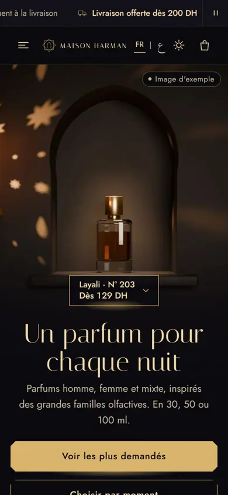
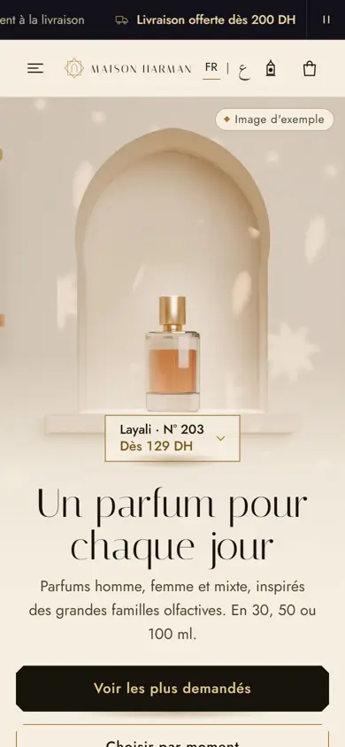

Dark
LightVersion 1
Lanterne
Closest to theme 03, the clearest "buy with your eyes". The lantern's glow marks everything you can tap.
Its idea: a little lantern at the bottom fills up toward 200 DH and sparks when delivery becomes free.
Open version 1